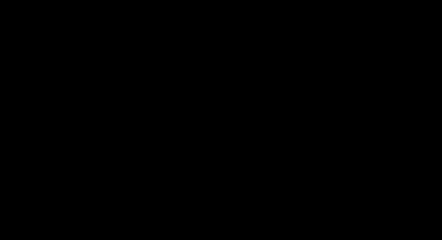

如果我们想要模拟光和物体的交互过程。还有一个物理现象我们需要注意。相比于反射到物体表面的光线，只有少数的光线会放射到我们的眼睛。想象我们创建了一个光源，一次只发射一个光子，他沿着直线传播，直到碰撞到物体，我们假设光子随机方向反射，如果光子最后撞击到我们的眼睛，那么我们就看到了光子碰撞的点。 在计算机图形学中，我们用图像平面代替我们的眼睛，光子撞击到图像平面上的一个像素点，将这个点的亮度值增加。重复这个过程，直到所有像素点的值都被确定好。这个技术就叫前向追踪，因为光子从光源前进直到到观察者。
在实际生活中，光线可能向任意方向反射，每个方向上几种人眼的概率非常小。可能几十亿个光子才会有一个反射到人眼。在计算机中，模拟这么多光子于场景中的物体交互是不可行的。 即使我们使用这个方法，如果我们的光线不够多，一些区域也将不会被均匀地照射。
想象我们用白色记号笔在黑色的纸上画一个茶壶。如图所示，开始只有几个光子和茶壶相交，随着点的增加，茶壶几乎完全被光子覆盖。 但是，发射1000个光子，或者数倍于1000个光子也不能保证物体完全被光子覆盖。这意味着我们需要观察图像，在我们满意使停止程序，这是不现实的。
前向追踪使得在计算机中模拟自然的光线变得可能，然而，这个方面我们可以看出是不高效的，很难用于实际用途。一个改进的方法在1980年被Turner Whitted提出，他说： 因为少数光线会到达人眼，所以这个方法是十分浪费的。，一个建议是用相反的方向追踪光线。